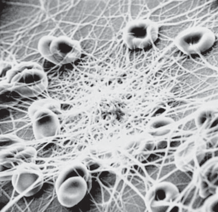
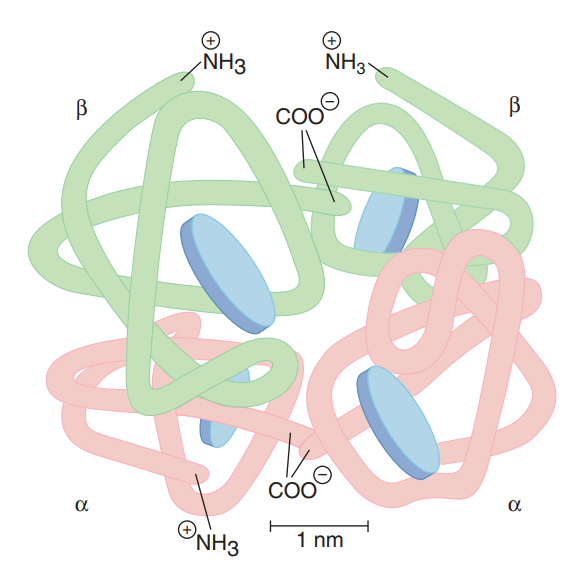
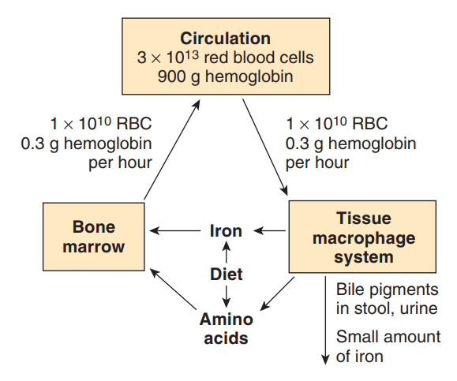
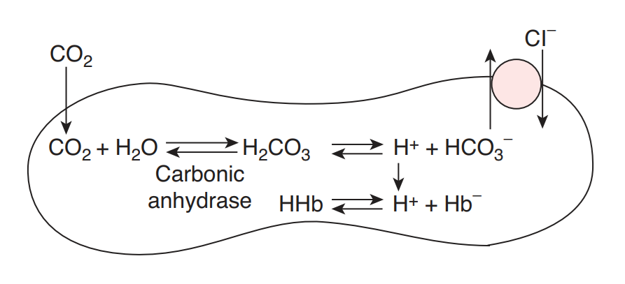
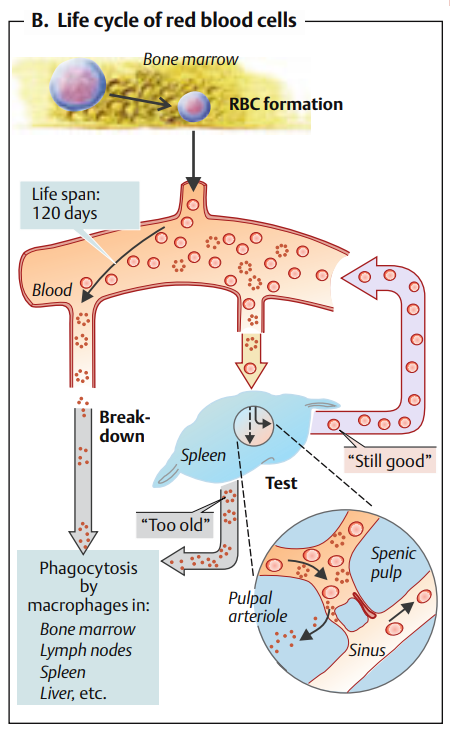

Sinh lý Hồng cầu (Erythrocytes / Red Blood Cells)
Khảo sát đặc tính cấu trúc, sinh tổng hợp Hemoglobin, điều hòa tủy xương, các chức năng hô hấp kiềm toan và chu trình thoái biến.
Phần I: Đại cương và Cấu trúc Hồng cầu
Hồng cầu (Erythrocytes) là loại tế bào máu chiếm số lượng đông đảo nhất trong tuần hoàn, chịu trách nhiệm chính trong việc vận chuyển khí oxy và cacbonic để duy trì sự sống của tế bào cơ thể.
Ở người trưởng thành khỏe mạnh, số lượng hồng cầu dao động trong khoảng 5,4 triệu/µL ở nam và 4,8 triệu/µL ở nữ. Riêng đối với người Việt Nam trưởng thành, trị số sinh lý bình thường dao động quanh mức từ 3,8 triệu đến 4,5 triệu hồng cầu/mm³ máu. Thể tích chiếm bởi hồng cầu trên tổng thể tích máu toàn phần được gọi là dung tích hồng cầu (Hematocrit - Hct), bình thường đạt tỷ lệ khoảng 47% (±5%) ở nam và 42% (±5%) ở nữ.
Đặc điểm cấu trúc đặc biệt của Hồng cầu:
- Hình đĩa lõm hai mặt (Biconcave disc): Hồng cầu có kích thước đường kính trung bình khoảng 7,5 µm và chiều dày ở ngoại vi là 2 µm, phần trung tâm mỏng hơn chỉ khoảng 1 µm. Cấu trúc lõm này làm tăng diện tích bề mặt tiếp xúc lên 20 - 30% so với hình cầu, giúp tối ưu hóa tốc độ khuếch tán khí. Đồng thời, cấu trúc này giúp hồng cầu cực kỳ mềm dẻo, dễ dàng biến dạng, uốn cong để len lỏi qua các mao mạch nhỏ có đường kính rất hẹp (chỉ khoảng 5 µm) mà không bị rách vỡ.
- Tiêu biến nhân và bào quan: Hồng cầu trưởng thành ở người không có nhân và không chứa bất kỳ bào quan nào (như ty thể, lưới nội chất). Sự mất nhân này giải phóng hoàn toàn không gian bào tương cho việc chứa huyết sắc tố và ngăn ngừa tổn thương vật liệu di truyền do lực ma sát cơ học liên tục trong mao mạch.
- Màng hồng cầu tích điện âm: Lớp màng bán thấm có tính chọn lọc cao. Trên bề mặt màng mang các gốc axit sialic (N-acetyl-neuraminic acid) liên kết với phân tử glycophorin A, tạo ra điện tích âm mạnh thường trực. Điện tích âm này tạo lực đẩy tĩnh điện giữa các tế bào hồng cầu, giúp chúng di chuyển tự do trong dòng máu mà không bị kết tụ hay dính chùm vào nhau.
- Sức bền thấu thấu (Osmotic fragility): Khi đặt trong dung dịch đẳng trương (NaCl 0,9%), hồng cầu giữ nguyên hình dạng. Trong dung dịch ưu trương, nước từ tế bào đi ra ngoài làm hồng cầu teo rúm lại. Trong dung dịch nhược trương, nước tràn vào trong làm hồng cầu phình to và vỡ (hiện tượng tiêu huyết - hemolysis). Sức bền thấu thấu bình thường của hồng cầu người: bắt đầu vỡ ở nồng độ NaCl 0,5%, vỡ 50% ở 0,40-0,42% và vỡ hoàn toàn ở nồng độ NaCl 0,35%.

Phần II: Phân tử Hemoglobin (Hb)
Hầu như toàn bộ không gian bào tương của hồng cầu được dành để chứa Hemoglobin (Huyết sắc tố). Mỗi tế bào hồng cầu chứa khoảng 29 pg hemoglobin. Hemoglobin quyết định màu đỏ của máu và đảm nhận các chức năng vận chuyển khí và đệm của hồng cầu.
Cấu trúc phân tử Hemoglobin:
Hemoglobin là một protein cấu trúc bậc 4 hình cầu, cấu tạo gồm hai phần chính: Heme và Globin.
- Nhân Heme: Là một cấu trúc vòng hữu cơ sắt-porphyrin (protoporphyrin IX) chứa một ion sắt hóa trị hai (Fe2+) ở trung tâm. Đây là vị trí gắn kết lỏng lẻo với oxy. Mỗi phân tử Hemoglobin chứa đúng 4 nhân Heme.
- Chuỗi Globin: Phần protein bao quanh nhân Heme, gồm 4 chuỗi polypeptide đối xứng nhau từng đôi một.
Các loại Hemoglobin sinh lý chủ yếu:
| Loại Hemoglobin | Cấu trúc chuỗi Globin | Thời kỳ xuất hiện chủ yếu | Đặc tính sinh lý đặc biệt |
|---|---|---|---|
| Hemoglobin A (HbA) | 2 chuỗi α và 2 chuỗi β (α2β2) | Người trưởng thành (chiếm >95% tổng lượng Hb) | Ái lực bình thường với oxy, gắn kết linh hoạt với 2,3-DPG để điều hòa nhả oxy ở mô. |
| Hemoglobin F (HbF) | 2 chuỗi α và 2 chuỗi γ (α2γ2) | Thời kỳ bào thai (giảm dần sau sinh) | Ái lực với oxy cao hơn HbA do chuỗi γ ít có khả năng gắn kết với chất 2,3-DPG. Điều này giúp thai nhi dễ dàng "giành" oxy từ máu mẹ qua rau thai. |

Phần III: Sự sinh sản Hồng cầu (Erythropoiesis)
1. Nơi sản xuất hồng cầu theo các giai đoạn phát triển
Hoạt động sinh sản hồng cầu diễn ra tại các cơ quan khác nhau tùy theo tuổi của cá thể:
- Những tuần đầu thai kỳ: Hồng cầu được sản xuất chủ yếu từ các tế bào trung mô ở túi noãn hoàng (yolk sac).
- Tháng thứ 4 - 5 của thai nhi: Gan và lách là cơ quan tạo máu chủ đạo.
- Từ tháng thứ 7 - 8 trở đi và suốt đời trưởng thành: Tủy đỏ của xương (chủ yếu là xương dẹt như xương chậu, xương ức, xương sườn, xương sọ và đầu các xương dài) đảm nhận vai trò tạo máu duy nhất.
2. Các giai đoạn biệt hóa tế bào hồng cầu
Từ tế bào gốc vạn năng trong tủy xương (Pluripotent Hematopoietic Stem Cell), dưới sự kích thích của các yếu tố tăng trưởng, hồng cầu trải qua các giai đoạn phát triển liên tục như sau:
-
Tiền nguyên hồng cầu (Proerythroblast) Tế bào kích thước lớn, nhân to rõ rệt, chất nhiễm sắc mịn. Bắt đầu tổng hợp những phân tử globin đầu tiên.
-
Nguyên hồng cầu ưa kiềm & đa sắc (Basophilic & Polychromatophilic) Bào tương bắt đầu bắt màu kiềm do tích tụ nhiều ribosome phục vụ tổng hợp Hemoglobin. Sau đó bào tương chuyển sang đa sắc khi nồng độ Hb tăng dần lên.
-
Nguyên hồng cầu ưa acid (Orthochromatic erythroblast) Hemoglobin đạt mức bão hòa cao khiến bào tương bắt màu acid đỏ hồng. Ở cuối giai đoạn này, nhân tế bào bị teo nhỏ và bị **đẩy ra ngoài** tế bào.
-
Hồng cầu lưới (Reticulocyte) Hồng cầu không còn nhân nhưng vẫn còn giữ lại mạng lưới tàn dư của ARN và ribosome trong bào tương. Tế bào chui qua màng mao mạch tủy xương đi vào máu ngoại vi. Hoạt động tổng hợp Hb vẫn tiếp tục diễn ra.
-
Hồng cầu trưởng thành (Erythrocyte) Sau khi lưu thông ở máu ngoại vi khoảng 24 - 48 giờ, hồng cầu lưới mất hoàn toàn mạng lưới ARN còn sót lại, tạo nên hình dạng đĩa lõm hai mặt chuẩn của hồng cầu trưởng thành.
3. Cơ chế điều hòa sinh hồng cầu bằng Erythropoietin (EPO)
Yếu tố kích thích sinh hồng cầu cốt lõi không phải là số lượng hồng cầu lưu thông mà là tình trạng thiếu oxy ở mô (hypoxia) (do thiếu máu, suy hô hấp, lên cao, co mạch).
Khi áp suất oxy ở mô thận giảm, các tế bào kẽ đặc biệt ở vỏ thận (và khoảng 10% ở gan) sẽ tăng tiết hormone Glycoprotein tên là Erythropoietin (EPO) vào máu. EPO di chuyển đến tủy xương, gắn vào các thụ thể đặc hiệu giúp kích thích sự nhân lên và đẩy nhanh tốc độ trưởng thành của các dòng tiền nguyên hồng cầu. Khi số lượng hồng cầu tăng lên làm oxy mô trở về bình thường, thận sẽ giảm tiết EPO (cơ chế điều hòa ngược âm tính).
4. Các nguyên liệu tạo hồng cầu quan trọng và bệnh lý liên quan
🔩 Sắt (Iron)
Sắt được hấp thu chủ yếu ở tá tràng. Trong máu, sắt gắn vào protein vận chuyển là
Transferrin đến tủy xương để tổng hợp nhân Heme. Lượng sắt thừa được dự trữ ở gan
dưới dạng phức hợp Ferritin hoặc Hemosiderin.
Bệnh học: Thiếu sắt dẫn đến giảm tổng hợp
Heme
gây Thiếu máu hồng cầu nhỏ, nhược sắc (Microcytic, hypochromic anemia).
💊 Vitamin B12 & Acid Folic (B9)
Cần thiết cho quá trình tổng hợp DNA (thymidine triphosphate) giúp nhân đôi chất nhiễm sắc và phân
chia tế bào. Vitamin B12 được hấp thu ở hồi tràng và bắt buộc phải gắn với Yếu tố nội tại
(Intrinsic Factor) do tế bào viền của dạ dày tiết ra.
Bệnh học: Thiếu B12 hoặc B9 làm tế bào
không
phân chia được nhưng bào tương vẫn phát triển, tạo ra các tế bào khổng lồ dễ vỡ: Thiếu máu
hồng cầu to / ác tính (Macrocytic / Pernicious anemia).

Phần IV: Chức năng của Hồng cầu
1. Chức năng hô hấp (Vận chuyển khí Oxy và Cacbonic)
a. Vận chuyển Oxy (O2):
Oxy kết hợp lỏng lẻo, thuận nghịch với ion sắt Fe2+ của nhân Heme trong phân tử Hemoglobin
theo
phản ứng:
Hb + 4O2 ↔
Hb(O2)4
Mỗi phân tử Hb chở được tối đa 4 phân tử O2. Trung bình 1g Hb tinh khiết gắn kết tối đa
với
1,34 ml khí O2.
Ái lực gắn kết của Hb với oxy chịu ảnh hưởng mạnh mẽ bởi các yếu tố môi trường thông qua Hiệu
ứng
Bohr (đường cong phân ly Oxy-Hemoglobin Barcroft). Đường cong phân ly dịch chuyển sang
phải (tức làm giảm ái lực, giúp Hb dễ dàng nhả oxy cho mô tiêu thụ) khi xảy ra các điều
kiện sau tại mô cơ quan:
• Tăng nồng độ ion H+ (giảm pH máu).
• Tăng phân áp cacbonic (PCO2).
• Tăng nhiệt độ môi trường xung quanh mô.
• Tăng nồng độ chất 2,3-diphosphoglycerate (2,3-DPG) trong
hồng
cầu.
• Ngộ độc khí CO: Khí Carbon Monoxide (CO) có ái lực gắn kết với Hemoglobin
mạnh gấp 210 lần so với khí Oxy. Khi hít phải CO, nó nhanh chóng chiếm chỗ của
O2 tạo ra Carboxyhemoglobin bền vững, đồng thời làm đường cong phân ly lệch trái ngăn cản
các
O2 còn lại phóng thích vào mô, dẫn đến ngạt tế bào cấp tính.
• Methemoglobin: Khi ion sắt Fe2+ trong heme bị oxy hóa thành sắt
Fe3+ dưới tác dụng của hóa chất, thuốc (như Nitrite) sẽ tạo thành Methemoglobin. Hợp chất
này
không còn khả năng vận chuyển oxy, gây triệu chứng xanh tím trên lâm sàng.
b. Vận chuyển Cacbonic (CO2):
CO2 khuếch tán từ mô vào máu được vận chuyển theo 3 con đường chính:
- Dạng hòa tan vật lý: Chiếm khoảng 7% lượng CO2 vận chuyển trong huyết tương.
- Dạng Carbaminohemoglobin: Chiếm khoảng 23%. CO2 kết hợp thuận nghịch trực tiếp với các gốc amin (-NH2) của chuỗi Globin chứ không gắn vào nhân heme.
- Dạng ion Bicarbonate (HCO3-): Chiếm đa số (khoảng 70%). Khi CO2 khuếch tán vào hồng cầu, dưới sự xúc tác của enzyme tốc độ cao Carbonic Anhydrase (CA), nó phản ứng với nước tạo thành axit carbonic (H2CO3), sau đó phân ly thành ion H+ và HCO3-.
Để duy trì cân bằng điện tích màng tế bào, ion HCO3- sau khi tạo ra sẽ đi ra ngoài huyết tương để vận chuyển, đồng thời ion Cl- từ huyết tương đi ngược vào hồng cầu qua kênh Band 3. Đây gọi là hiện tượng dịch chuyển Clorua (Chloride shift / Hamburger shift).

2. Chức năng điều hòa thăng bằng kiềm toan (Hệ đệm Hemoglobin)
Hemoglobin là một hệ đệm cực kỳ quan trọng trong máu, chiếm tới 70% tổng khả năng đệm của máu toàn phần. Cấu trúc protein globin có chứa nhiều phân tử acid amin Histidine có nhân imidazol. Nhân này có khả năng nhận hoặc nhả ion H+ linh hoạt, giúp duy trì pH máu ổn định quanh mức sinh lý từ 7,35 đến 7,45 trong suốt quá trình vận chuyển khí.
3. Chức năng miễn dịch và Tạo áp suất keo
- Miễn dịch: Màng hồng cầu chứa các kháng nguyên nhóm máu đặc hiệu (như hệ ABO, Rh). Ngoài ra, hồng cầu có khả năng liên kết với phức hợp kháng nguyên - kháng thể - bổ thể trong máu để vận chuyển và trình diện cho các đại thực bào ở gan và lách tiêu hủy, giúp làm sạch tuần hoàn.
- Tạo áp suất keo: Các protein cấu trúc màng và sự phân bố ion tạo ra một phần áp suất keo màng tế bào, giúp điều hòa thể tích tế bào hồng cầu và giữ nước lại trong lòng mạch.
Phần V: Sự thoái biến của Hồng cầu
Hồng cầu có đời sống trung bình trong vòng tuần hoàn khoảng 110 đến 120 ngày.
Khi hồng cầu già đi, màng tế bào mất dần điện tích âm và tính linh hoạt mềm dẻo ban đầu do cạn kiệt nguồn enzyme nội bào. Chúng không thể biến dạng để chui qua các vách mao mạch hẹp của lách. Kết quả là chúng bị kẹt lại và bị thực bào bởi các đại thực bào của hệ võng nội mô (chủ yếu tại lách và gan).
Quy trình phân rã và tái chế các thành phần của Hồng cầu:
-
Phân cắt Globin Chuỗi Globin được đại thực bào thủy phân phân giải hoàn toàn thành các acid amin tự do, đưa lại vào kho dự trữ acid amin của cơ thể để tổng hợp protein mới.
-
Tái chế Sắt (Fe2+) Ion sắt Fe2+ được tách khỏi nhân Heme. Nó được vận chuyển trong máu bởi Transferrin quay về tủy xương để tạo hồng cầu mới, hoặc di chuyển đến gan gắn vào Ferritin để dự trữ.
-
Chuyển hóa vòng Porphyrin thành Bilirubin tự do Phần vòng Porphyrin của nhân Heme bị cắt mở vòng để chuyển hóa thành sắc tố màu xanh là Biliverdin, sau đó khử thành Bilirubin tự do (chưa liên hợp) có màu vàng. Bilirubin tự do là chất không tan trong nước, gắn vào Albumin huyết tương để di chuyển về gan.
-
Liên hợp tại Gan và bài xuất qua mật Tại gan, Bilirubin tự do được kết hợp với axit glucuronic nhờ men glucuronyl transferase tạo thành Bilirubin liên hợp tan trong nước. Chất này được bài xuất vào đường mật đi xuống ruột non.
-
Bài tiết qua phân và nước tiểu Tại ruột, dưới tác dụng của vi khuẩn, Bilirubin liên hợp được chuyển hóa thành các hợp chất không màu rồi bị oxy hóa thành Stercobilin (thải qua phân tạo màu vàng của phân) và một phần nhỏ tái hấp thu vào máu thải qua thận dưới dạng Urobilin (tạo màu vàng nhạt của nước tiểu).

Tài liệu tham khảo
- Mai PT. Sinh lý MÁU YDS 2025 [Video recording]. Bs. Linh O'la Scar; 2025.
- Barrett KE, Barman SM, Boitano S, Brooks HL. Ganong's Review of Medical Physiology. 24th ed. McGraw-Hill Medical; 2012.
- Silbernagl S, Despopoulos A. Color Atlas of Physiology. 6th ed. Thieme; 2009.
- Pinsky MR, Brochard L, Mancebo J, Hedenstierna G. Applied Physiology in Intensive Care Medicine. 2nd ed. Springer; 2009.